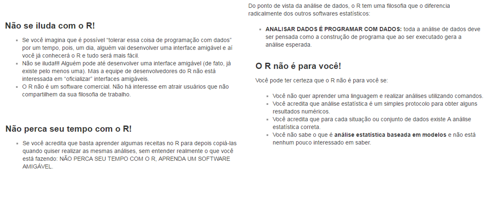
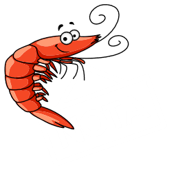
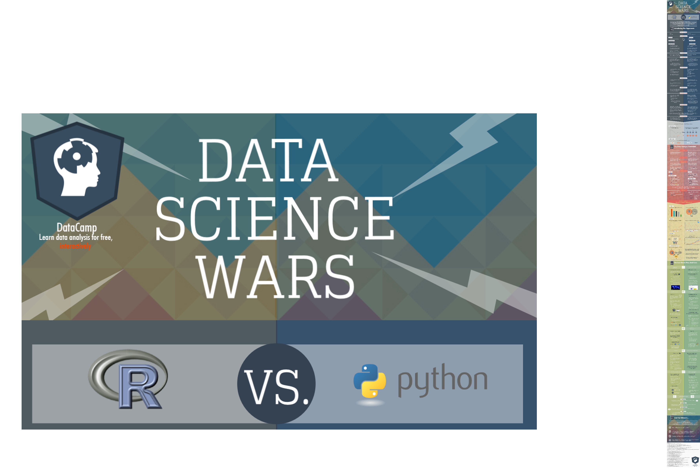
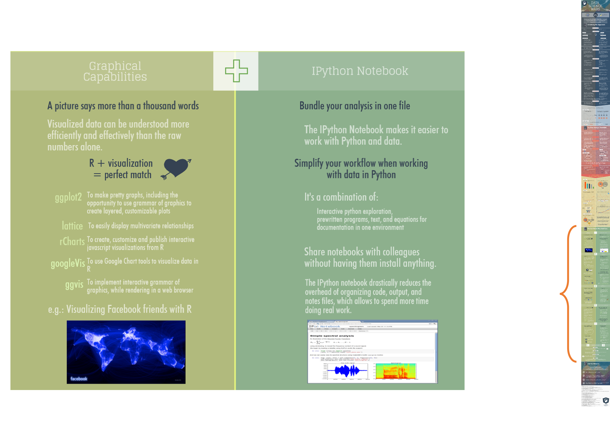
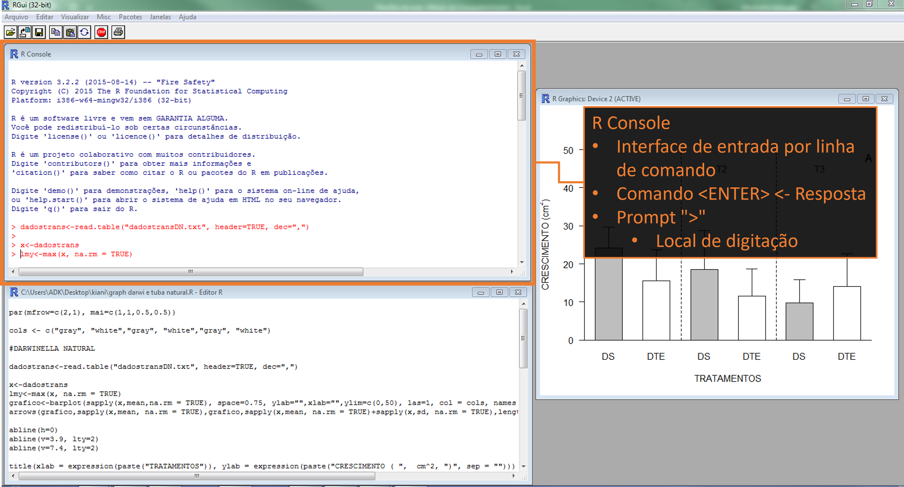
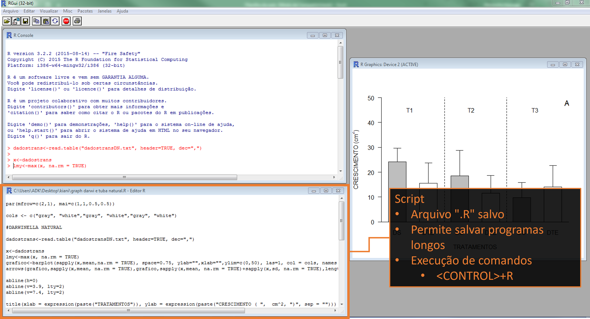
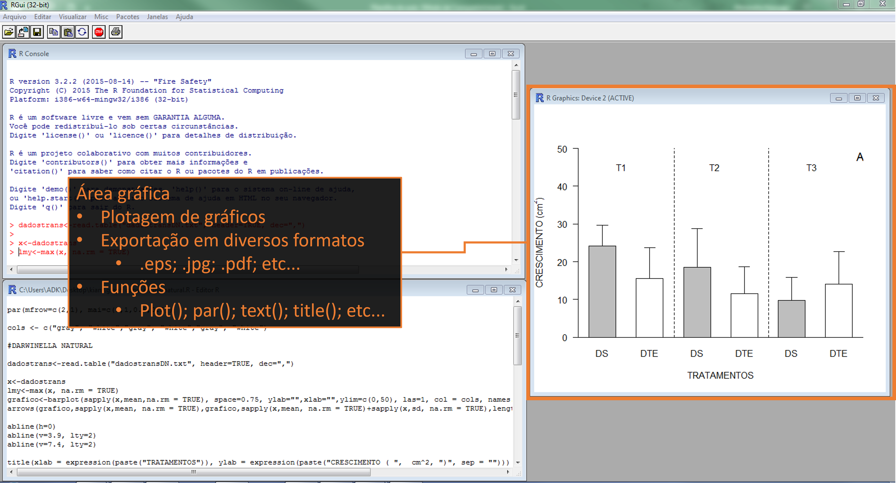
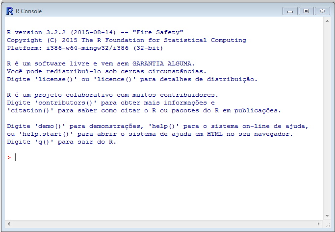
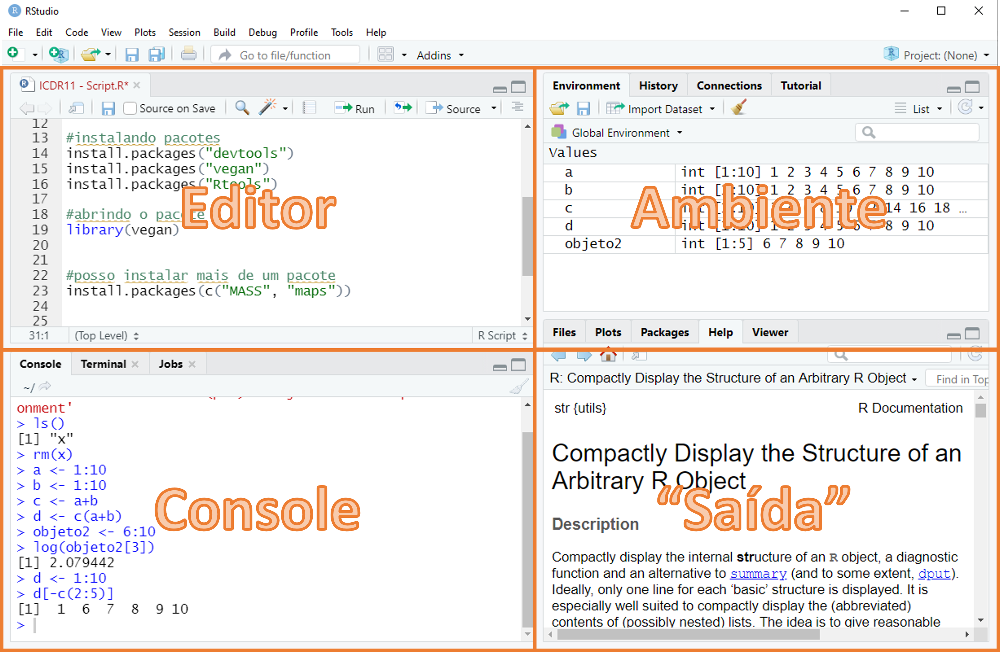

Estatística Básica utilizando R
- R?
- Pacote R x Python
- Pacote R
O R é para mim?
{width=“100%}”
A linguagem R

A linguagem R
Um pouco da história…
- Ross Ihaka and Robert Gentleman (1990s)
- Desenvolvimento a partir da linguagem S
- Ambiente livre para ensino de estatística – Universidade de Auckland
- 1995 – disponibilizado como código livre (Martin Mächler)
- 2000s
- 2000 – Primeira versão!!! – R version 1.0.0
- 2004 – R version 2.0.0
- 2013 – R version 3.0.0
- 2020 – R version 4.0.0
- R Core Team
- Grupo com direito de modificar o arquivo com o código fonte do R
“R has now outgrown its origins and its
development is now a collaborative effort
undertaken using the Internet to exchange ideas
and distribute the results.”
Ross Ihaka
A linguagem R
Diga ao R para fazer…
O R consegue fazer alguma coisa?
Não, o R é uma linguagem!
- Diga ao computador para fazer isto, utilizando comandos em linguagem R no console.
- Linguagem dinâmica de programação
- Usa um interpretador para transformar comandos em 0´s e 1´s

Não tenha medo do erro
Precisamos aprender a linguagem R para nos comunicar em R
O erro em um comando origina uma mensagem de “Erro”
- Mas não se irrite…
Lembre-se: você é capaz de aprender. O computador é simples e rápido, mas não aprende…
- Procure entender o que o programa não entendeu
Error in…
Warning message:
In data(crabs) : data set ‘crabs’ not found
Warning message:
In mean.default(crabs) : argumento não é numérico nem lógico: retornando NA
Pacote R x Python
Pacote R x Python

Pacote R x Python

Pacote R x Python

Pacote R x Python

Pacote R x Python

Pacote R x Python

Pacote R

Pacote R

Pacote R

Pacote R

Pacote R
- FUNÇÃO(parâmetros)
- license()
- citation()
- demo()
- help()
- q()
- print()
- # - permite fazer comentários
- Objetos
- R utiliza objetos para armazenar dados na memória
- “<-” ou “=”- operador de atribuição
- Nomes de objetos não podem conter espaços, acentos ou caracteres especiais

Pacote R
- FUNÇÃO(parâmetros)
- license()
- citation()
- demo()
- help()
- q()
- print()
- # - permite fazer comentários
- Objetos
- R utiliza objetos para armazenar dados na memória
- “<-” ou “=”- operador de atribuição
- Nomes de objetos não podem conter espaços, acentos ou caracteres especiais
Pacote R
- FUNÇÃO(parâmetros)
- license()
- citation() >citation()
- demo() >demo()
- help() >help()
- q()
- print() >print(“Ola”)
- # - permite fazer comentários
- Objetos
- R utiliza objetos para armazenar dados na memória
- “<-” ou “=”- operador de atribuição
- Nomes de objetos não podem conter espaços, acentos ou caracteres especiais
Pacote R
- FUNÇÃO(parâmetros)
- license()
- citation() >citation()
- demo() >demo()
- help() >help()
- q()
- print() >print(“Ola”)
- # - permite fazer comentários
- Objetos
- R utiliza objetos para armazenar dados na memória
- “<-” ou “=”- operador de atribuição
- Nomes de objetos não podem conter espaços, acentos ou caracteres especiais

Pacote R
- FUNÇÃO(parâmetros)
- license()
- citation() >citation()
- demo() >demo()
- help() >help()
- q()
- print() >print(“Ola”)
- # - permite fazer comentários
- Objetos
- R utiliza objetos para armazenar dados na memória
- “<-” ou “=”- operador de atribuição
- Nomes de objetos não podem conter espaços, acentos ou caracteres especiais
O RStudio

O RStudio

O RStudio
- Editor (Scripts) – Onde escrevemos os códigos
- (CTRL+SHIFT+1)
- Console – Onde rodamos os códigos
- CTRL+SHIFT+2)
- Ambiente – Todos os objetos criados na sessão
- (CTRL+SHIFT+4)
- “Saída”
- (CTRL+SHIFT+3)
- Files – Arquivos no diretório de trabalho ( > setwd())
- Plots – Local onde são plotados os gráficos
- Help – Janela de ajuda, onde são mostradas as funções ( > help() ou > ? )
- History – Histórico dos comandos rodados
O RStudio
- Atalhos!!!
O uso de atalhos ajuda muito a fluidez do trabalho
CTRL+ENTER: roda a linha selecionada no script. MUITO USADO
ALT+-: (<-) sinal de atribuição. MUITO USADO
CTRL+SHIFT+M: (%>%) operador pipe.
CTRL+1: altera cursor para o script.
CTRL+2: altera cursor para o console.
CTRL+SHIFT+C: (Des)comenta a linha.
CTRL+SHIFT+R: Cria um comentário para uma nova parte do código.
ALT+SHIFT+K: janela com todos os atalhos disponíveis